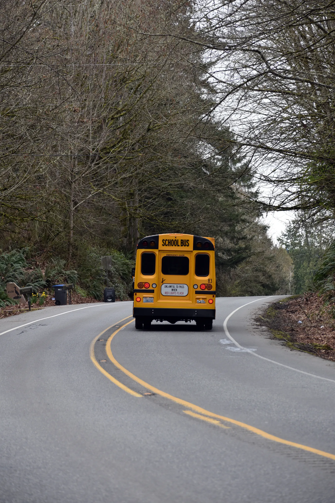

Tell us what you need to know.
Start with the route, student journey, plan, or school partnership question that brought you here.
A clear starting point for support.
This frontend validates your entries and shows a local confirmation. Connect it to an approved form or support service before accepting real enquiries.
Route code, school, stop, journey direction, and relevant date.
Choose the right resource.

Plan communication around the whole journey.
A school or transport operator can adapt this experience to verified routes, schedules, handover rules, support contacts, and production services.
Include the number of schools, service areas, and expected parent workflows in your enquiry.
Know what belongs in each channel.
General enquiry
Use the form for route, plan, and partnership questions.
Account help
Use a verified support workflow once authentication is connected.
Emergency
Contact local emergency services or the operator’s designated urgent line.
You may already be one answer away.
Browse grouped guidance about routes, journeys, plans, accounts, and the limits of this frontend.
Ready to partner with KinderRide?
Whether you are a parent seeking safe transport or a school administrator planning transit routes, our team is ready to assist.